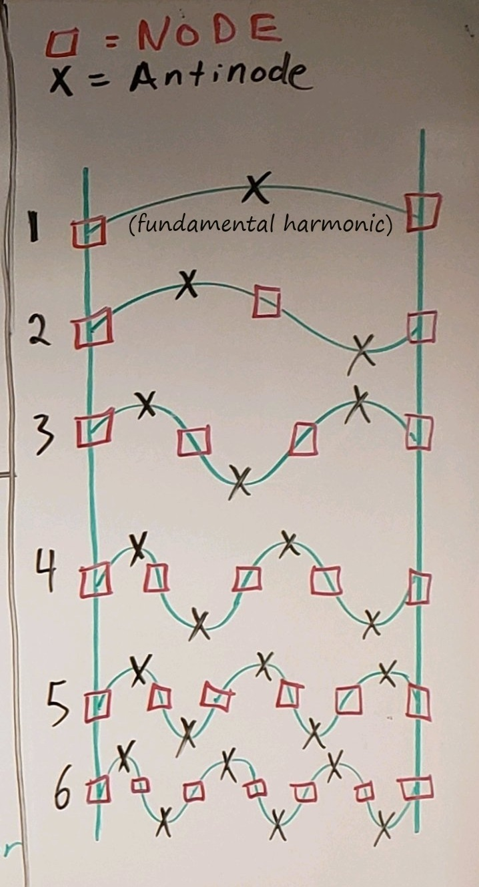
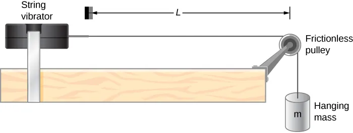
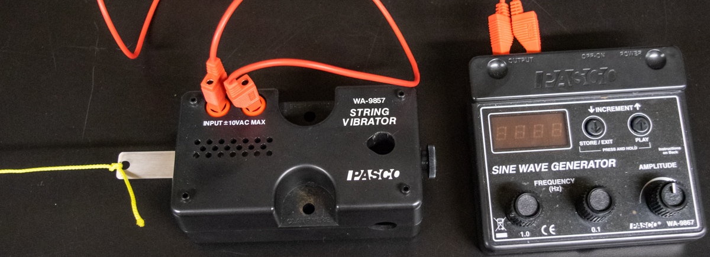
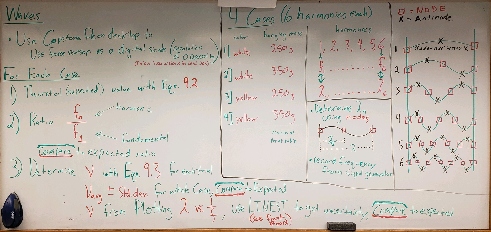
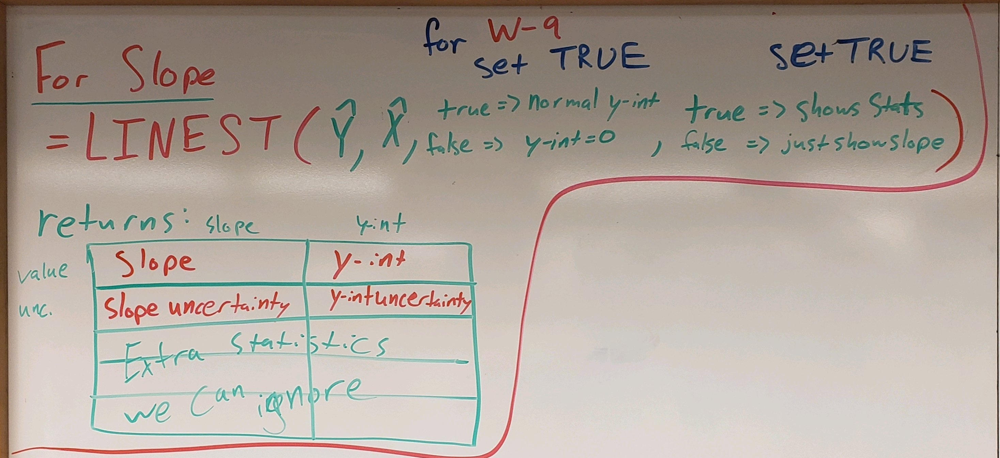

Wave Motion#
Background#
● Background Overview#
OVERALL GOALS
Use a vibrating string to:
Investigate wave propagation through a medium
Understand the relationship between wave frequency and wavelength
○ Waves & Velocity#
The general equation for the velocity of propagation of waves in a medium of continuously distributed stiffness and inertia is given by a formula of the form
In the case of transverse waves propagated along a flexible cord, the elasticity or stiffness factor is due to the tension, \(F_T\), in the cord; and the inertial factor is the linear density, \(\mu=m/L\), of the cord. Thus the velocity of propagation, \(v\), of a transverse wave is
The velocity can also be determined from (160) by establishing standing waves with a known frequency, \(f\). The wavelength, \(\lambda\), is directly measurable from the spacing of nodes, or points of zero displacement. (The wavelength is twice the distance between successive nodes.)
A standing wave is produced when two identical waves travel in opposite directions in the same medium. The two waves alternate between constructive and deconstructive interference with each other forming a pattern of vibration that appears stationary along the direction of propagation. Examples of standing waves are illustrated in Fig. 143.
{kind=link}

Fig. 143 Illustration of 1st through 6th harmonics with their nodes/antinodes.#
For our case, a wave is generated at one end of a cord by a string vibrator that moves the cord up and down at a measurable frequency. This wave travels down the cord to the other end and reflects back towards the source. As the wave reflects back and forth, augmented by the string vibrator at one end, the oppositely traveling waves interfere to produce a ‘standing-wave’ pattern of vibration. It can be shown that certain points of this pattern never move. They are called nodes (see Fig. 143). Thus in order for a standing wave pattern to be produced on a cord that is effectively tied at both ends and cannot move, the pattern that is established must, at the very least, have nodes at each end (also see fundamental in ○ Experiment Preview & Example Video: Waves on a String). Subsequently, the maxiumum amplitude part of the wave that does move is called antinodes.
○ Node Spacing & Harmonics#
Remember that a full wave is a cycle, out and back to its initial position and direction. Take, for example, swinging on a swingset; you get as far back to start swinging, you swing forward, reach the same height but come to a stop and change to the opposite direction — at this point, you’re only halfway through it. You then start swinging backwards until you again reach that initial height and come to a stop, but this time, you’re changing back to going in the same direction when you started — a full cycle complete. The positions when you changed direction but velocity came to a stop are equivelent to nodes, and your fastest motion at the bottom of the swing is equivalent to having some amplitude at antinodes. Througout this whole example, you start at a node, change direction at the second node, and end your cycle at a third node. We find that a full cycle’s wavelength has 3 nodes and 2 antinodes (illustrated by 2nd mode in see Fig. 143).
For a standing wave to exist on a string, there must be nodes at either end of the string.
As you add more standing waves on that string, you find other possible patterns known as normal modes. Each standing wave mode allows for an integral number of waves to be travelling out and back on the string at any given time. If you have the second mode, then the string would have two full waves travelling on the string, one out, one reflected back. From the side, it would just appear as one single wave due to the standing wave nature showing two antinodes. Each of these normal modes are also known as harmonics. When waves constructively add together, it’s as if they are in tune (similar to musical instruments). Every time you add another wave to the standing wave, you go up another octave or harmonic. We find, for a normal standing wave (nodes on either end), that the harmonic number \([n = \text{# of antinodes}]\) (e.g. Fig. 143).
Since the propagation velocity is only a function of the physical properties of the cord, the wavelength can be adjusted by selecting the appropriate frequencies of vibration that satisfy the normal-mode condition of ‘nodes at least at the ends’. Since the length of the cord must be such that nodes exist at each end, the length of the cord \(L\), tied at each end, must be an integral number of \(\lambda\)/2. I.e. \(L = n \frac{\lambda}{2}\). As an example for a standing wave on a string, we could find for wavelength \(\lambda_n\), where \(n\) is the harmonic (here showing generalized version, first, second, and third harmonics, as visualized in Fig. 143, and assuming end-to-end length of string \(L = 0.6\,\text{m}\)):
NOTE: Whenever you measure across multiple nodes, regardless of if it’s the entire string or some smaller part of it, you need to account for how many half-wavelengths (node-to-nearest-node) chunks of the standing wave you are measuring across.
Similarly, the allowable frequencies of vibration of the cord are integral multiples of each other. They are said to be harmonically related (see Fig. 143). Each harmonic relative to the fundamental is shown to be integral numbers: \((f_n/f_1 = 1, 2, 3 ...)\). An example for the frequency \(f_n\) (where \(n\) is the harmonic) of the first three harmonics of a standing wave could be found as:
○ Experiment Preview & Example Video: Waves on a String#
If embedding is broken, follow: https://www.youtube.com/watch?v=fQfNq8tJp3s
In this experiment, similar to that seen in ○ Experiment Preview & Example Video: Waves on a String and Fig. 144, one end of a horizontal cord is attached to the string vibrator; the other end, after passing over a pulley, is attached to a hanging mass. We can adjust the amplitude and the frequency of the wave by adjusting the output of the sine wave generator (see Fig. 145), which powers the string vibrator. The tension is determined by the weight of the hanging mass. Therefore for a given tension and linear density, the frequency can be adjusted and measured for a standing wave condition. A measurement of node spacing establishes the wavelength. With the frequency and wavelength measured, the velocity can be determined from (160). From a measurement of the linear density of the cord and the tension in the cord, we can independently determine the velocity from (159). The two independently determined values of velocity of propagation can be compared.
{kind=link}

Fig. 144 Illustrated setup with string vibrator and string over frictionless pulley. String tension from hanging mass \(m\). Length of string (first-to-last nodes) — left side bracket is wider to represent the lack of clear position from the vibrating metal tab.#
{kind=link}

Fig. 145 Setup with sine wave generator and string vibrator.#
● Equipment#
Category |
Items |
|---|---|
Signal Generation |
• Sine wave generator \((1 - 800\,\text{Hz}\), \(0.1\,\text{Hz}\) resolution) |
Wave Apparatus |
• PASCO String vibrator |
Electrical Connections |
• 2x banana-plug wires to connect sine wave generator to string vibrator |
Measurement Tools |
• Meter sticks (\(1\,\text{m}\) and \(2\,\text{m}\), additional on front wall) |
Mounting Hardware |
• Clamp to secure string vibrator to desk |
Strings |
• 2 strings of different linear densities (yellow and white) |
Mass & Tension System |
• Mass hanger of \(\sim 50\,\text{g}\) with \(100\,\text{g}\) and \(200\,\text{g}\) disk masses (at front table) |
Force Measurement |
• PASCO High-Resolution Force Sensor |
Experimental Procedure#
● Preview#
PROCEDURE OVERVIEW
Investigate wave propagation through a medium for three cases (two different density strings at two different tensions)
Determine expected propagation velocity from linear density and tension measurements
Determine experimental propagation velocity by:
Vary and determine the frequency range of the sine wave generator where you achieve standing waves
Measure wavelength(s) from node to furthest acceptable node
● Preliminary Setup & Expected Velocity#
The cases today are as shown in Table 22.
Case |
Cord Type |
Total Mass (g) |
Harmonics |
|---|---|---|---|
I |
White |
250 |
1 - 6 |
II |
White |
350 |
1 - 6 |
III |
Yellow |
350 |
1 - 6 |
Note: Total mass includes |
Create a common data table including necessary info for each case (but not limited to):
Accepted value of \(g=9.803\,\text{m/}\text{s}^2\) for Fairfield, CT
cord masses
cord mass uncertainties
cord lengths
cord length uncertainties
calculated cord linear densities
linear density uncertainties
hanging masses
hanging mass uncertainties
tensions
tension uncertainties
expected propagation velocities
expected propagation velocity uncertainties
Measure the length and your estimated uncertainty of each cord by untying them completely and gently stretching them along a meter stick.
Weigh each cord using the force sensor as a digital scale with the provided Capstone file (see desktop). Zero sensor, hang string on hook; after values have settled (~5 - 10 seconds), highlight settled region of mass vs. time plot, see data table with associated data points highlighted, record mean and standard deviation (as mass uncertainty) to the nearest thousandth of a gram.
Calculate each cord’s linear density (mass per unit length, \(\mu=m/L\)) and uncertainty by maximizing and taking the difference (\(\delta\mu= (m+\delta m)/(L - \delta L) - \mu\)).
Weigh each hanging mass (mass on hanger) and determine its uncertainty similar to how you found cords’ masses earlier.
Calculate each hanging mass’s related tension (\(F_T = mg\)) and uncertainty by maximizing and taking the difference (\(\delta F_T = (m + \delta m) g - F_T\)).
Calculate each case’s expected propagation velocities using (159), and similarly maximize and take the difference \(\delta v=\sqrt{(F_T + \delta F_T) / (\mu - \delta \mu)} - v\).
● Experimental Velocity#
Create a data table for the current case with rows for each trial (harmonic number \(n = 1, 2, 3, 4, 5,\) and \(6\)) and average propagation velocity and uncertainty; columns for (but not limited to):
measured node-to-furthest-best-node distance
estimated node-to-furthest-best-node distance uncertainty
measured/determined wavelength \(\lambda_n\)
wavelength uncertainty \(\delta \lambda_n\)
minimum measured frequency \(f_{n\text{,min}}\)
maximum measured frequency \(f_{n\text{,max}}\)
the measured frequency \(f_n\)
the measured frequency uncertainty \(\delta f_n\)
the ratio \(f_n/f_1\) of the \(n\)-harmonic’s frequency to the fundamental
calculated propagation velocity \(v_n=\lambda_n f_n\)
calculated propagation velocity uncertainty
Tie one end of the cord to the vibrating blade, run it over the pulley, and hang the current case’s total mass (slotted mass and hanger).
Create the first-harmonic standing wave: Turn on the Sine Wave Generator and set the Amplitude knob about midway. Use the Coarse (1.0 Hz increments) and Fine (0.1 Hz increments) Frequency knobs of the Sine Wave Generator to adjust the vibrations so that the the cord vibrates in one segment. This first harmonic is achieved when the cord is vibrating at what is known as the fundamental frequency (see fundamental in Fig. 143). Adjust the driving amplitude and frequency to obtain a large-amplitude wave that vibrates smoothly. Ensure the cord does not hit the table (why?). Check vibration near the vibrating blade. Ideally, the point where the cord attaches should be a node, but you will find that the apparent position of the node is somewhere past where the cord attaches.
Determine frequency \(f_n \pm \delta f_n\). Slowly lower the frequency. Record \(f_{n\text{,min}}\) as the lowest frequency you find while still having a standing wave. Slowly increase the frequency. Record \(f_{n\text{,max}}\) as the highest frequency you find while still having a standing wave. Determine the measured frequency as the average of the min and max values \((f_n = (f_{n\text{,max}} + f_{n\text{,min}})/2)\). Determine the frequency’s uncertainty as half the range you just found \((\delta f_n = (f_{n\text{,max}} - f_{n\text{,min}})/2)\).
Determine the ratio of each frequency to the fundamental frequency, \(f_n/f_1\). Does this make sense? What is the expected ratio?
While at your determined frequency, measure the distance between nodes (i.e. node-to-furthest-best-node distance) and estimate its uncertainty. Calculate the wavelength \(\lambda_n \pm \delta \lambda_n\).
For the first harmonic, you need to estimate the position of the node near the vibrating blade.
For higher harmonics, you can avoid the node near the blade and focus on the node at the pulley and the node furthest away along the string. What’s your estimated uncertainty in the length measurement; more or less accurate when measuring across single or multiple antinodes?
Calculate the propagation velocity with (160). Similarly calculate the velocity uncertainty by maximizing and taking the difference \((\delta v_n= (\lambda_n + \delta\lambda_n) (f_n + \delta f_n) - v_n)\). As you reach higher harmonics for the current case, how do they compare to each other? Do you expect them to be the same or different, why?
Raise the frequency to resonate at the second harmonic. The cord should vibrate with a node at each end and one node in the center (see higher harmonics in Fig. 143). Again measure the frequency and the distance between pulley node and furthest-best-node along the string to determine wavelength.
Continue repeating the previous measurements for the higher harmonics (list in Table 22).
Calculate the average \(v\) and average \(\delta v\) for the current case. Does it agree with your expected velocity (as calculated from the tension and the linear density in (159))? If not, what may be contributing to the lack of accuracy?
● Graphical Analysis Velocity#
Plot wavelength \(\lambda\) vs. the inverse of the frequency \(1/f\) for the current case. As you complete additional cases, add each case to the same single plot (include trendlines like normal) as you go.
Use
LINEST(y-values,x-values,TRUE,TRUE)to calculate the slope and use (163) to determine the slope-derived propagation velocity (\(v_\text{slope-derived} \pm \delta v_\text{slope-derived}\)). Consider the uncertainty in the slope. Do your plot-derived propagation velocities agree with the expected velocities? Your plot will be represented by the reorganization of (160):
● Continue to Additional Cases#
CONSIDER: How do you expect tensions and linear densities to affect the wave propagation?
Once you are satisfied with your first case, increase the hanging mass to 350 grams and repeat the above procedure for Case II (at ● Experimental Velocity).
Using a cord with a different linear density, repeat for Case III (at ● Experimental Velocity).
Post-Lab Submission — Interpretation of Results#
● Finalized Spreadsheets#
Make sure to submit your finalized data table (Excel sheet).
Please include concise summary table.
Please include plot:
One plot with all three cases on it with their own trendlines: \(\lambda\) vs \(1/f\)
● Post-lab Writeup#
In a paragraph, summarize your error analysis. Be both qualitative and quantitative.
What is the precision of your equipment?
What are possible sources of systematic (i.e. affecting accuracy) and random (i.e. affecting precision) errors?
What are your measurement uncertainties, and, based on these uncertainties, how do your final results change? I.e. do your different measurement and slope uncertainties make your final results larger or smaller, by how much?
In a paragraph, summarize the results you have determined for all cases. Consider:
What was the point of today’s lab; what did we aim to discover?
For each case, do your experimental velocities of propagation (average and slope-derived) agree with your expected velocity from (159)? (be quantitative)
How is the velocity of propagation dependent on the tension in the string and density of the cord?
When the experiment was done with a lighter weight cord, why would the string vibrator have to be run faster for each measurement condition?
Looking at you plot containing all three cases, how are the cases organized? What do you notice about the slopes as you change cases?
Do you experimental ratios of \(n\)-harmonic’s frequency to fundamental frequency agree with the expected relationship? Why, physically, do we expect this \(f_n/f_1\) relationship?
The Whiteboard#
{kind=link}

Fig. 146 Overview. Notes. Equation numbers have changed. Using error propagation instead of standard deviation. 3 Cases instead of 4, old case three is dropped.#
{kind=link}

Fig. 147 LINEST() function.#